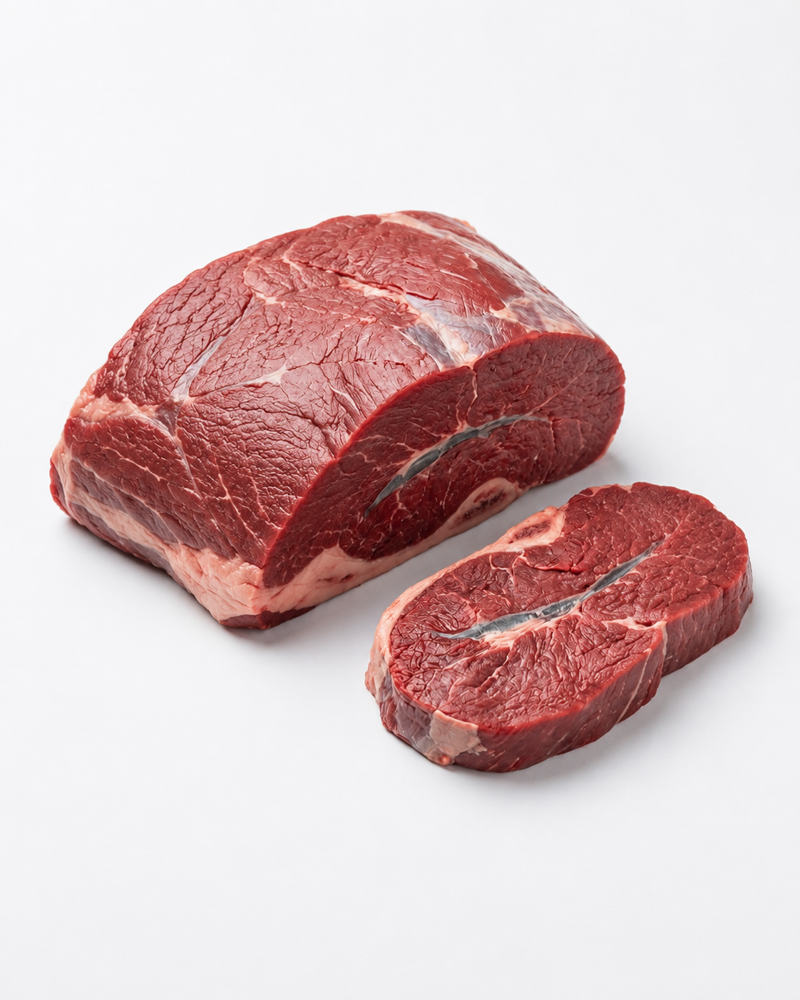

Mapa CarneCerta
Colageno, sabor e alto rendimento
O musculo entrega profundidade de sabor e otima performance em panelas, caldos e carne moida mais magra.

Ideal para • panela • moer • desfiar
Maciez
2/5
Melhora com coccao longa
Gordura
1/5
Muito baixa
Sabor
4/5
Profundo
Abrir recomendador inteligente
Musculo
Corte magro com muito colageno, ideal para texturas ricas e receitas de longa coccao com caldo encorpado.
O musculo responde melhor em fogo baixo, panela de pressao e preparos onde o tempo transforma a fibra. Tambem funciona muito bem para moer quando a ideia e uma carne mais leve.
Caldos e sopas
Carne moida magra
Desfiar com molho
4.7
Perfil leve
Excelente para quem busca carne mais magra em panela, sopas robustas ou moagem para receitas com menos gordura.
Ideal para
Dica do açougueiro IA
Use panela de pressao ou coccao lenta para converter o colageno em textura sedosa e caldo muito mais encorpado.